On the left wall, you can view the method, setup & materials.
The results are on the back wall.
On the right side of the floor you can click on discussion.
Materials & Setup
The materials consisted of a Shure microphone, a MOTU M6 audio interface, a Novation Circuit Rhythm sampler, headphones, and two screens. One screen displayed the session instructions, rendered through a custom Python script. The second screen, connected to the researcher's laptop, displayed the Ableton Live interface used to manage the audio manipulations.
Click on the Ableton logo for the technical specifications & plugins that were used.
Method
Participant and settings
The study was conducted at Leiden University. 18 Participants were recruited through social media, personal networks and university communications. No formal demographic data was collected. Given the sensitive nature of the experiment, the participants privacy was prioritised. As the study was exploratory, the focus was on whether the intervention produced any effect, rather than on demographic differences. Participants were asked to report any hearing impairment or tinnitus, those with severe hearing loss were excluded as the task required adequate audio perception. A warning regarding the potential impact of audio manipulations on tinnitus was included in the consent form.
A small sample size was anticipated, therefore, a within-subjects design was employed. Dividing participants into an experimental and control group was not feasible, and a pre-post comparison within the same group was considered the most appropriate approach. Participants were exposed to a single experimental condition, namely interaction with the audio interface. Believability, distress and acceptance were measured pre and post experiment. Additionally before the experiment, a CFQ13 was administered. Post experiment, participants had to complete a questionnaire consisting of Likert-scale items and open-ended questions.
Privacy
To ensure the participants privacy, several measures were taken. The thought remained private throughout the experiment, participants did not need to share their thought (only if they choose to). Prior to recording, the headphone setup was demonstrated using a demo recording to confirm the thought would not be audible to anyone but the participant. During the recording and the interface interaction, the researcher left the room. After the experiment, the audio-file was deleted in front of the participant. As ACT aims to change the functional effects of a thought rather than its content, protecting the privacy was both ethically and theoretically motivated.
Procedure
Each experiment session took approximately 40/50 minutes including consent & debriefing. No fixed time limit was imposed in order to prevent any feeling of performance pressure. There were no sessions that exceeded one hour.
Thought selection
Participants were asked to identify one negative self-referential thought that they experienced repeatedly and found personally distressing and believable. To support this process, a worksheet was provided to help participants formulate and articulate their thought. At no point were participants required to share their negative self-referential thought with the researcher, it remained private throughout the experiment. The thought selection was conducted by the researcher, who guided participants through the thought selection process using a standardised set of instructions. A script was written in Dutch and English, so each session the same introduction and explanation was used.
Pre Visual analog scale (VAS)
The negative self-referential thought was assessed on a degree of emotional discomfort, believability and acceptance using a visual analog scale before and after the experiment. Responses ranged from 0 – 100 with 0 (not uncomfortable at all) to 100 (very uncomfortable) for the emotional discomfort, 0 (not believable at all) to 100 (very believable) for the believability scale, and 0 (not accepted at all) to 100 (fully accepted) for the acceptance scale.
Cognitive Fusion Questionnaire –13
Cognitive fusion was measured prior to the experiment using the Cognitive Fusion Questionnaire[25], A 13-item self-report measure with total scores ranging from 13 to 91, with each item rated on a 7-point scale from 1 (rarely/never) to 7 (always), where higher scores indicate greater cognitive fusion. The experiment aims to facilitate cognitive defusion, therefor, it was relevant to establish the degree to which participants were fused with their thought prior to the experiment. The CFQ-13 was administered once as a sample characteristic.
Recording of the negative self-referential thought
After completion of the survey, participants were instructed how to record their thought. A Novation Circuit Rhythm sampler was used as the primary control device. Buttons were mapped to record, play and stop. When the participant was confident enough to record their own thought, the researcher left the room and came back as soon as the participant was done recording. Participants could record their thought up to three times and select the recording they preferred.
Graphical user interface
Once participants had finished their recording, the researcher launched the custom graphical user interface (GUI). A screen showed the GUI displaying a slider for each audio manipulation (pitch, robot, reverb, panning and volume). The sliders moved in real time in response to the physical controls on the Novation sampler, providing participants with visual feedback of the active modulations. A legend showing instructions for recording and resetting the audio modulations was positioned in the upper left corner of the screen. Participants were instructed to listen to each audio modulation in isolation before combining them (this instruction was also displayed on screen), so that they could clearly identify what each modulation sounded like individually. Once familiar with each effect, participants then freely explored and combined the modulations as they choose. This element of free exploration was deliberate as it reflects ACT emphasis on experiential learning. Instead of conversing or imagining, the participants experiences the transformed sound of their own voice in real time. The audio was played in a loop, but participants were able stop the recording if the experience was too uncomfortable or distressing. The researcher walked participants through the interface with the audio on mute, so that the sound of each modulation was encountered for the first time during the experiment.
Post Visual analog scale (VAS) & survey
Following the interaction phase, participants completed a second VAS assessment (same as the VAS prior to the experiment). They also evaluated each modulation separately, rating its effect on believability, emotional discomfort and acceptance as better, neutral or worse. This made it possible to compare the effects of each modulation against each other. The ratings were scaled from -50 to +50. For believability, a higher score indicated the thought felt more believable. For emotional discomfort, a higher score indicated more discomfort. For acceptance, a higher score indicated greater acceptance of the thought.
Analysis of open-ended questions
Open-ended questions were analysed via a qualitative content analysis[30] Categories for experiential shifts were derived from theoretical frameworks relevant to cognitive defusion[11].
The categorization matrix was refined iteratively during coding, conducted using Taguette[31], consistent with standard practice in qualitative content analysis[32]. The full categorization matrix, including category definitions and illustrative examples, is available here.
The following categories were used to code participant responses:
Experiential shifts:
Increased intensity: words and phrases describing a stronger experience of the sentence
Decreased intensity: words and phrases describing a weaker experience of the sentence
Outsider perspective: viewing the sentence from an external position
Insider perspective: experiencing the sentence from a first-person viewpoint
Deliteralization: the sentence felt less meaningful or less real
No shift: explicit indication of no change in experience
Descriptive: change described without clear direction
Responses were also analysed for modulation-specific metaphors, instances where particular metaphorical language was consistently associated with a specific audio modulation. For example, whether spatial metaphors occurred more frequently in descriptions of reverb than in descriptions of other modulations. Categories were developed inductively from the data, and where responses contained language corresponding to multiple categories simultaneously, all relevant codes were assigned.
Spatial: metaphors of location or distance, describing where the thought was perceived to be
Personification: attributing a separate character, voice or intention to the thought
Weight: using weight or heaviness to describe the impact of the thought
Sound texture: metaphors of tonal quality or texture, reflecting how the modulated audio was heard
Atmospheric: metaphors of mood or atmosphere evoked by the modulation, reflecting how the experience felt
Repetition: metaphors describing the experience of hearing the thought on repeat
Affective responses were coded based on emotional states explicitly reported by participants, as well as affective states inferred by the researcher from the language used, following the principles of emotion coding as described by Saldaña[32].
The following categories were identified:
Discomfort
Humor
Hurt
Loneliness
Pleasantness
Sadness
Seriousness
Self-compassion
Content Analysis Codebook
Technical Specifications
In Ableton[26] an audio effect rack was created, an audio rack is a chain of audio effects/devices that are used for the audio modulation. The chain starts with a compressor for volume control. After the compressor, the graillon 3 (a VST) [27] is used for shifting the pitch (from high to low). Swirl is used for the robot modulation. Swirl is an audio filter native in Ableton that uses a very fast LFO at 38Hz to move a resonant filter across a frequency spectrum set at 152Hz. In swirl you have a morph parameter, which blends different filter types giving the sound certain texture. Outer space is a preset in the reverb audio effect that simulates how sound reflects and decays in a large physical space. Utility is used to control the volume, the gain was adjusted to have a minimal db of -20 and a max of 35 db. Participants could not turn the volume down completely, ensuring continuous audio playback throughout the experiment. For the panning of the audio the E4L source panner [28] was used. In this setup played through standard stereo headphones, the perceptible effect resembles conventional left-right panning, but the e4L source panner is designed for 3D (Ambisonic) spatial positioning so there was a subtle spatial depth for the attentive listener. This was chosen deliberately because the ambisonic architecture of the E4L plugin could be a foundation for future work involving more advanced spatial movement of sound. Limiter was used the close the audio chain preventing digital clipping and distortion.
Graillon, Swirl, Outer Space, Utility and the E4L Source panner were mapped via Ableton's MIDI Map Mode to specific knobs on the Novation Circuit Rhythm for real-time manipulation of the modulation parameters during the experiment.
Macro
Device & parameter
Pitch Shift
Graillon 3 – Pitch shift
Reverb
Outer Space – Dry/Wet
Robot
Swirl – Dry/Wet
Volume
Utility – Gain
Panning
E4L Source Panner – Azim
Click a row to see the image of the audio effect rack.
[25] Gillanders DT, Bolderston H, Bond FW, Dempster M, Flaxman PE, Campbell L, Kerr S, Tansey L, Noel P, Ferenbach C, Masley S, Roach L, Lloyd J, May L, Clarke S, Remington B. The development and initial validation of the cognitive fusion questionnaire. Behav Ther. 2014 Jan;45(1):83-101. doi: 10.1016/j.beth.2013.09.001. Epub 2013 Sep 18. PMID: 24411117.
[26] Ableton AG, “Ableton Live 12 Suite,” version 12.3.2, 2025. [Computer software]. Available: https://www.ableton.com
[28] Envelop. (2025). Envelop for Live (Version 12.2.6) [Computer software]. GitHub. https://github.com/EnvelopSound/EnvelopForLive
[29] Masuda, A., Hayes, S. C., Twohig, M. P., Drossel, C., Lillis, J., & Washio, Y. (2009). A Parametric Study of Cognitive Defusion and the Believability and Discomfort of Negative Self-Relevant Thoughts. Behavior Modification, 33(2), 250–262. https://doi.org/10.1177/0145445508326259
[30] Elo, S., & Kyngäs, H. (2008). The qualitative content analysis process. Journal of Advanced Nursing, 62(1), 107–115. https://doi.org/10.1111/j.1365-2648.2007.04569.x
[31] Rampin et al., (2021). Taguette: open-source qualitative data analysis. Journal of Open Source Software, 6(68), 3522. https://doi.org/10.21105/joss.03522
[32] Saldaña, J. (2009). The coding manual for qualitative researchers. Sage.
[11] Blackledge JT (2015) Cognitive Defusion in Practice: A Clinician's Guide to Assessing, Observing, and Supporting Change in Your Client. Context Press.
View the results for the pitch modulation
View the results for the robot modulation
View the results for the reverb modulation
View the results for the panning modulation
Which combinations were used most, and how participants described their experience.
View the results for CFQ13 and pre & post VAS (Believability, Discomfort & Acceptance)
Wanna hear some music? A radio should be able to play some tunes right?
Press 1 to lower the volume Press 2 to increase the volume Press ESC to stop the music
Discussion
CFQ13 & VAS
The CF13 pre measurement showed elevated levels of cognitive fusion (M = 52.11, SD = 11.46), which is above the non-clinical normative range of approximately 36–40[25] and more consistent with scores observed in clinical populations.
VAS Pre & Post
Prior to analysis, the assumption of normality was assessed using the Shapiro-Wilk test. Results indicated that the data did not significantly violate normality for the paired samples analyses (all ps > .05). However, given the small sample size (N = 18), which limits the power of normality tests to detect violations, non-parametric analyses were used as a conservative approach. Wilcoxon signed-rank tests were conducted to examine pre- to post-intervention changes across three VAS measures (N = 18). No Bonferroni correction was applied. Results are reported at α = .05 and should be interpreted as indicative rather than confirmatory.
Believability decreased significantly from pre- (M = 82.28, SD = 11.07) to post-intervention (M = 67.11, SD = 24.70), p = .005, r = 0.809, indicating a large effect.
Discomfort decreased significantly from pre- (M = 59.00, SD = 25.08) to post-intervention (M = 49.78, SD = 26.94), p = .017, r = 0.708, indicating a large effect.
No significant change was found for acceptance from pre- (M = 71.78, SD = 21.09) to post-intervention (M = 77.39, SD = 20.74), p = .221, r = −0.367, though the effect size was medium. A negative r value here reflects that post-intervention scores were higher than pre-intervention scores, consistent with the hypothesised increase in acceptance.
Believability
Emotional discomfort
Acceptance
Pre
Post
Pre
Post
Pre
Post
M (SD)
82.28 (11.07)
67.11 (24.70)
59.00 (25.08)
49.78 (26.94)
71.78 (21.09)
77.39 (20.74)
N
18
18
18
Note. Scores on a 0–100 VAS scale. For believability and emotional discomfort, lower post scores indicate a positive outcome. For acceptance, higher post scores indicate a positive outcome.
Spearman correlations
Spearman correlations were conducted to asses whether cognitive fusion scores (CFQ-13) correlated with change scores on the three VAS measures. No significant correlations were found, suggesting that pre-intervention levels of cognitive fusion did not predict the degree of change in believability, discomfort or acceptance. A significant positive correlation was found between changes in believability and discomfort (rho = 0.491, p = .039), indicating that participants who reported greater reductions in believability also tended to report greater reductions in discomfort. This is consistent with Masuda et al.[29], who identified emotional discomfort and believability as related aspects of the psychological reaction to negative self-referential thoughts.
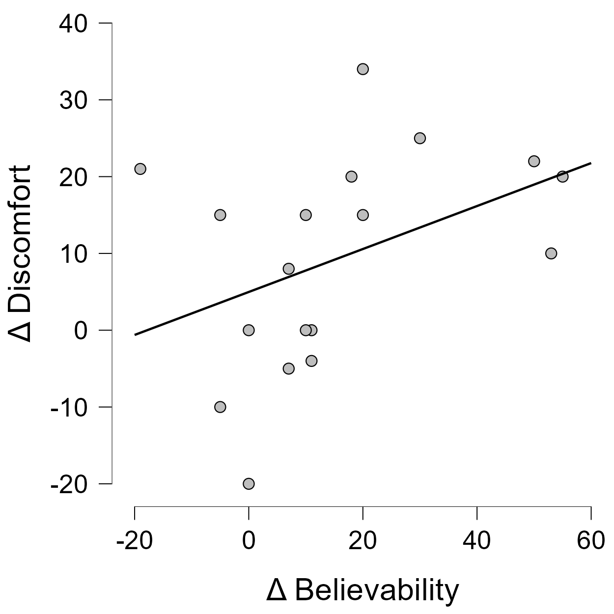
Pitch
To examine whether each audio modulation produced a significant deviation from zero, one-sample Wilcoxon signed-rank tests were conducted. As participants rated each modulation on a scale ranging from −50 to +50, scores were converted to absolute values prior to analysis in order to assess whether a perceivable effect occurred, regardless of its direction.
The pitch modulation showed significant effects across all three outcomes (all ps < .001).
Pitch (absolute scores)
V
p
Believability
171.0
< .001
Discomfort
136.0
< .001
Acceptance
120.0
< .001
Note. Wilcoxon signed-rank tests against a test value of zero using absolute change scores.
Analysis of raw change scores revealed no significant effects for pitch across any of the three outcome measures (believability: V = 87, p = .965, r = 0.018; discomfort: V = 60.5, p = .717, r = −0.110; acceptance: V = 71.5, p = .531, r = 0.192), reflecting considerable individual variability in the direction of effects. The raincloud plots illustrate this variability. Click on the images to enlarge them.
Pitch (raw scores)
V
p
r
Believability
87.0
.965
0.018
Discomfort
60.5
.717
−0.110
Acceptance
71.5
.531
0.192
Note. Wilcoxon signed-rank tests against a test value of zero using raw change scores. r = rank-biserial correlation. For believability and discomfort, negative r indicates effect in the expected direction. For acceptance, positive r indicates effect in the expected direction.
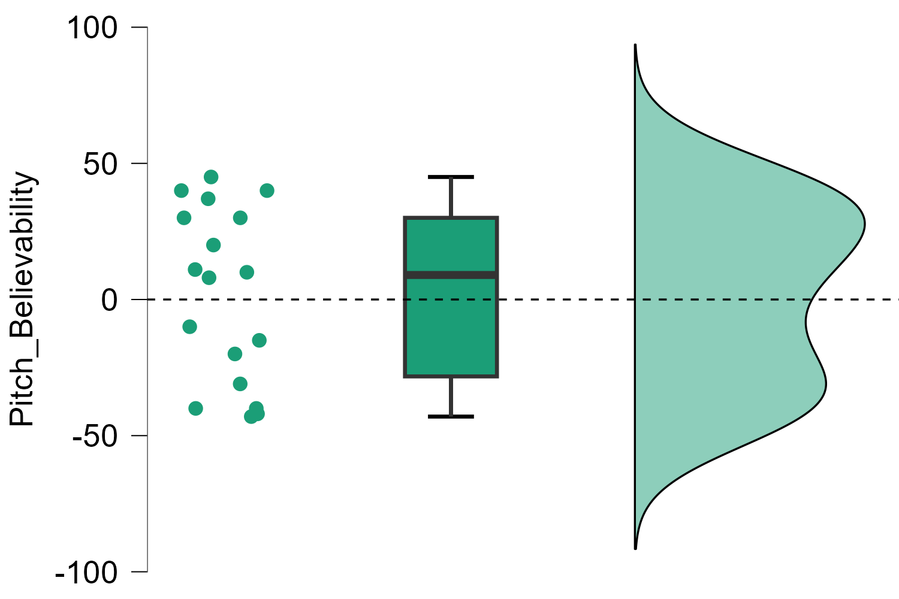
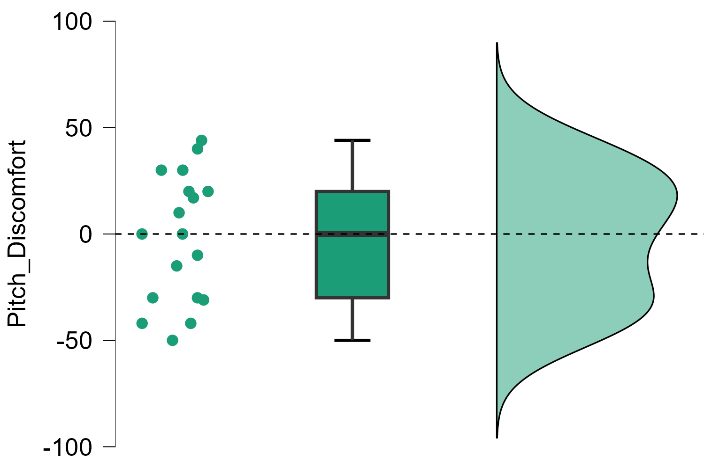
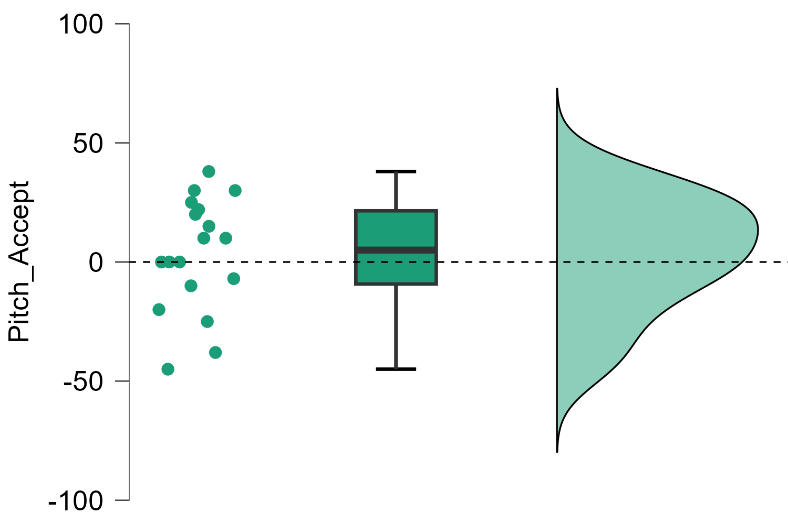
Robot
To examine whether each audio modulation produced a significant deviation from zero, one-sample Wilcoxon signed-rank tests were conducted. As participants rated each modulation on a scale ranging from −50 to +50, scores were converted to absolute values prior to analysis in order to assess whether a perceivable effect occurred, regardless of its direction.
The robot modulation showed significant effects across all three outcomes (ps < .002, ps < .001).
Robot (absolute scores)
V
p
Believability
136.0
< .001
Discomfort
91.0
.002
Acceptance
91.0
.002
Note. Wilcoxon signed-rank tests against a test value of zero using absolute change scores.
Analysis of raw change scores revealed significant effects for believability (V = 27, p = .036, r = −0.603) and acceptance (V = 74, p = .049, r = 0.626), indicating that the majority of participants rated the thought as less believable and more acceptable following the robot manipulation. Discomfort did not reach significance on raw scores (V = 24, p = .078, r = −0.543), reflecting greater individual variability in the direction of this effect. The raincloud plots illustrate this variability. Click on the images to enlarge them.
Robot (raw scores)
V
p
r
Believability
27.0
.036
−0.603
Discomfort
24.0
.078
−0.543
Acceptance
74.0
.049
0.626
Note. Wilcoxon signed-rank tests against a test value of zero using raw change scores. r = rank-biserial correlation. For believability and discomfort, negative r indicates effect in the expected direction. For acceptance, positive r indicates effect in the expected direction.
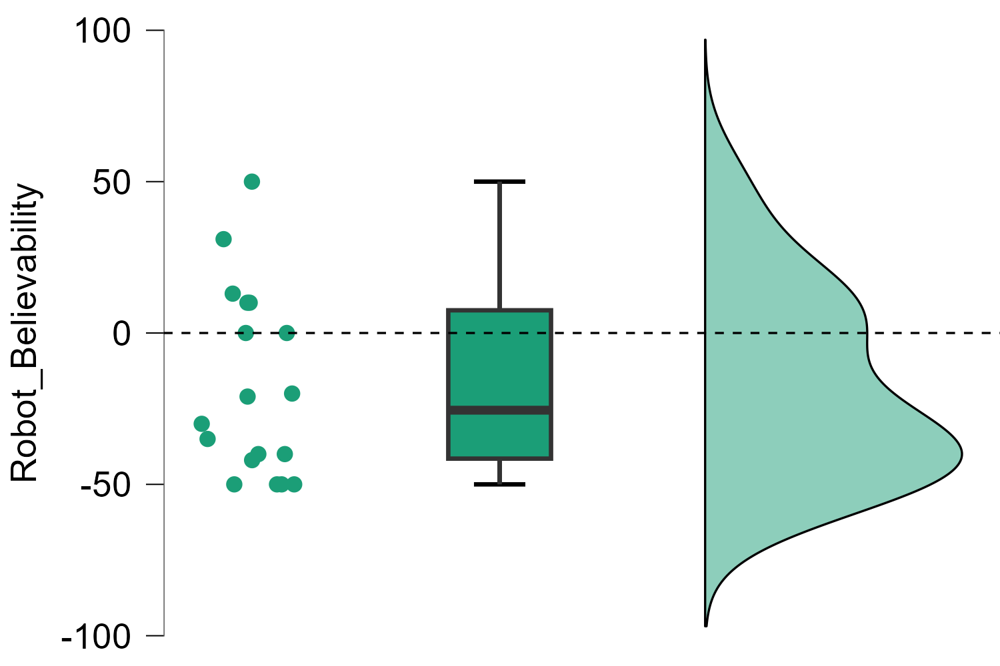
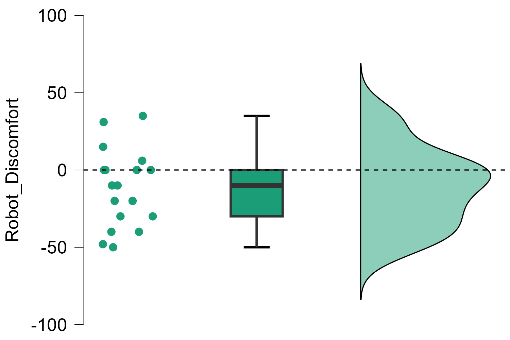
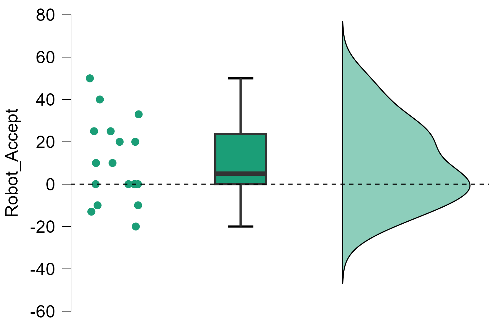
Reverb
To examine whether each audio modulation produced a significant deviation from zero, one-sample Wilcoxon signed-rank tests were conducted. As participants rated each modulation on a scale ranging from −50 to +50, scores were converted to absolute values prior to analysis in order to assess whether a perceivable effect occurred, regardless of its direction.
The reverb modulation showed significant effects across all three outcomes (all ps < .001).
Reverb (absolute scores)
V
p
Believability
171.0
< .001
Discomfort
136.0
< .001
Acceptance
153.0
< .001
Note. Wilcoxon signed-rank tests against a test value of zero using absolute change scores.
Analysis of raw change scores revealed a significant effect for discomfort (V = 108, p = .041, r = 0.588), indicating that the majority of participants rated the thought as more distressing following the reverb manipulation. Effects for believability (V = 123.5, p = .102, r = 0.444) and acceptance (V = 77.5, p = .981, r = 0.013) did not reach significance on raw scores, reflecting greater individual variability in the direction of these effects. The raincloud plots illustrate this variability. Click on the images to enlarge them.
Reverb (raw scores)
V
p
r
Believability
123.5
.102
0.444
Discomfort
108.0
.041
0.588
Acceptance
77.5
.981
0.013
Note. Wilcoxon signed-rank tests against a test value of zero using raw change scores. r = rank-biserial correlation. For believability and discomfort, negative r indicates effect in the expected direction. For acceptance, positive r indicates effect in the expected direction.
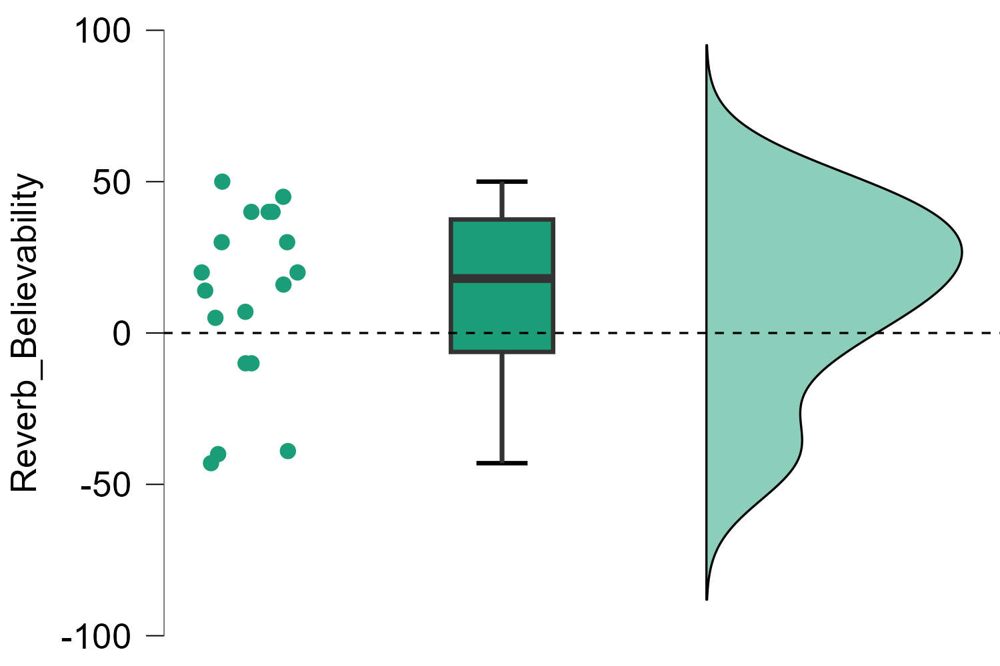
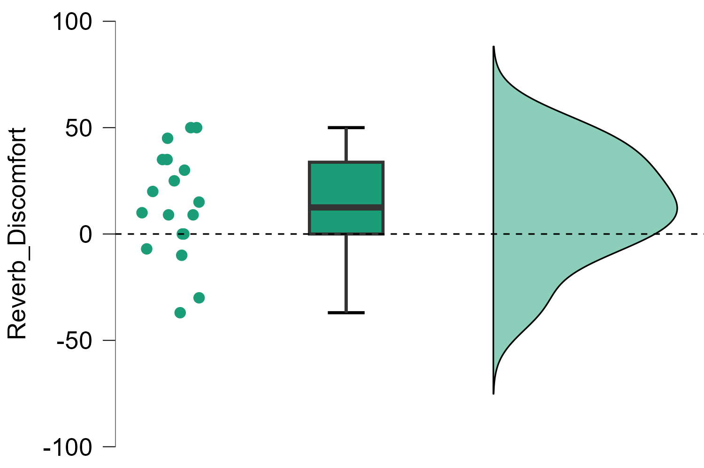
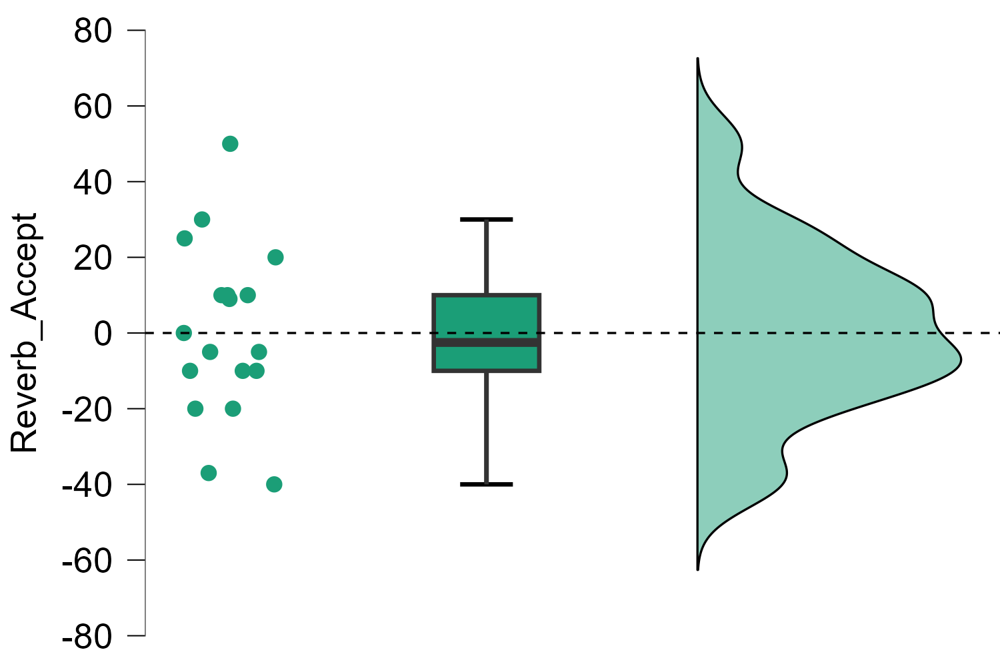
Panning
To examine whether each audio modulation produced a significant deviation from zero, one-sample Wilcoxon signed-rank tests were conducted. As participants rated each modulation on a scale ranging from −50 to +50, scores were converted to absolute values prior to analysis in order to assess whether a perceivable effect occurred, regardless of its direction.
Panning shows a significant effect for believability (p = .022), discomfort (p = .014) and acceptance (p = .022). Statistical significance of the absolute change scores does not necessarily indicate a practically meaningful effect. The small effect sizes and near-zero raw scores suggest that panning had minimal impact for most participants.
Panning (absolute scores)
V
p
Believability
28.0
.022
Discomfort
36.0
.014
Acceptance
28.0
.022
Note. Wilcoxon signed-rank tests against a test value of zero using absolute change scores.
Analysis of raw change scores revealed no significant effects for panning across any of the three outcome measures (believability: V = 14.5, p = 1.000, r = 0.036; discomfort: V = 27, p = .234, r = 0.500; acceptance: V = 17, p = .673, r = 0.214). The raincloud plots show that scores for believability and acceptance clustered around zero, suggesting that panning had little to no effect on these outcomes for most participants. Click on the images to enlarge them.
Panning (raw scores)
V
p
r
Believability
14.5
1.000
0.036
Discomfort
27.0
.234
0.500
Acceptance
17.0
.673
0.214
Note. Wilcoxon signed-rank tests against a test value of zero using raw change scores. r = rank-biserial correlation. For believability and discomfort, negative r indicates effect in the expected direction. For acceptance, positive r indicates effect in the expected direction.
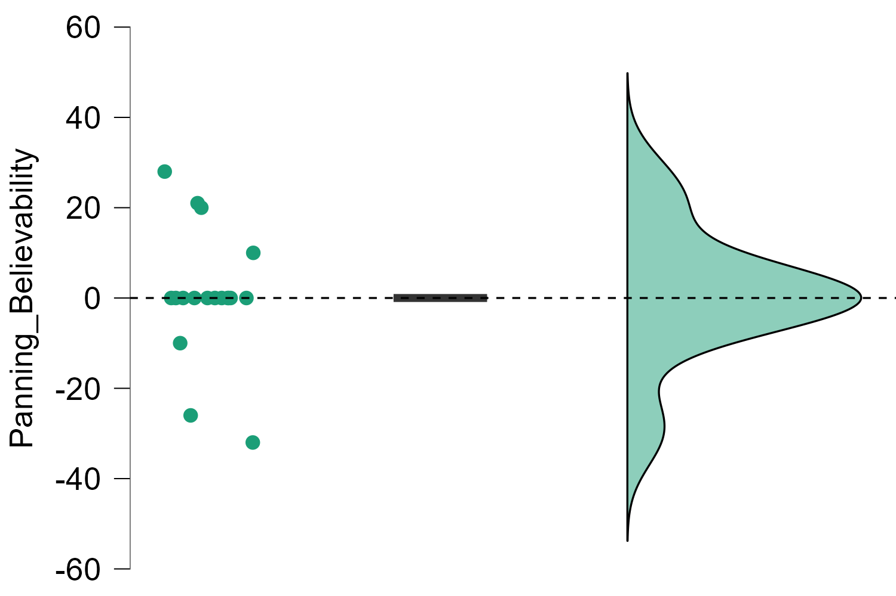
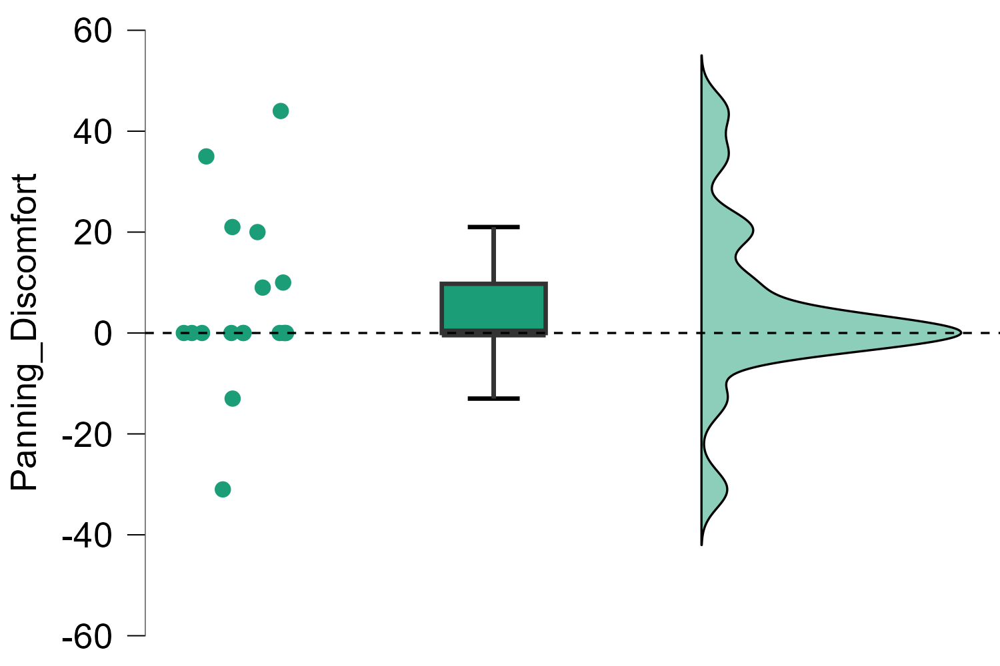
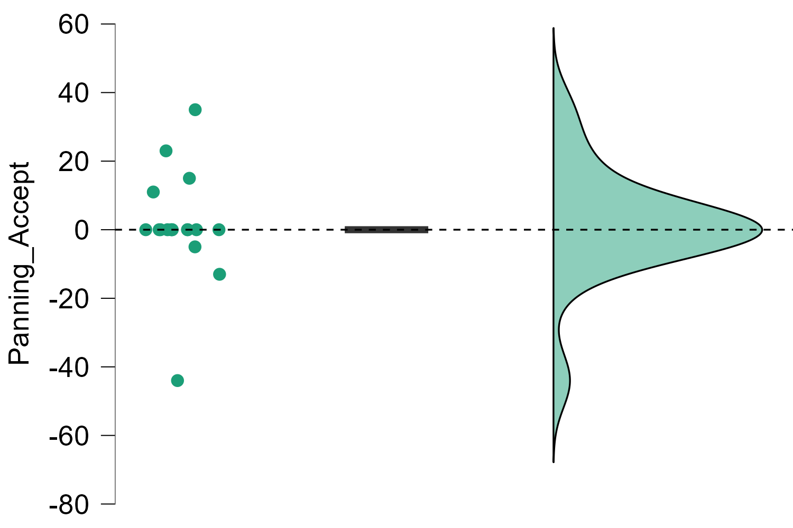
Mixer & Content Analysis
After using each audio modulation individually, participants then entered a free exploration phase, during which they could combine the audio modulations in any chosen way. Pitch combined with reverb was the most frequently reported combination (n=6), followed by pitch combined with robot and reverb (n=3) and pitch combined with robot (n=3). In every reported combination, either pitch or robot was present. See figure 1.10.
Content analysis
The results of the qualitative content analysis for experiential shifts, metaphors and affective state indicators are presented in a interactive data table (click on the table link to start it). The table is divided three tabs (modulations + experiential shifts, modulation + metaphors and modulations + affective states). You can isolate a modulation or a categorie by clicking on it. Select question 1 or 2 if you want to see the coded categories for each question. It is also possible to click on the participants number to see all the coded categories across all three analyses. For all the definitions of the categories and general coding rules, click on the link to see the codebook.
Experiential shifts
All the reported experiential shifts across the two analysed questions are shown in the interactive table. Increased intensity was the most frequently coded shift (n=5), followed by decreased intensity and outsider perspective (both n=4). Insider perspective and no shift were each coded for two participants, and one participant response was coded as descriptive. Pitch, reverb and robot were all three coded across all experiential shifts (Increased & decreased perspective, out & insider perspective and deliteralization).
Several participant responses were both coded with an increase and decrease of intensity. One participant’s response was both coded with outsider and insider perspective. This suggests that the experience and the perspective of the sentence was dynamic rather than unidirectional.
Quote — Increased intensity
“De modulatie van reverb zorgde bij mij voor het meeste ongemak in mijn beleving [omdat het mijn zin versterkte.]”
“The reverb modulation caused me the most discomfort in my experience [because it strengthened my sentence.]”
Quote — Outsider perspective
“De zin werd meer vervaagt, dit zorgde ervoor dat het leek [alsof ik naar andere personen aan het luisteren was.] Dit kwam voornamelijk voor bij de combinatie pitch & robot.”
“The sentence became more blurred, which caused it to feel [as if I was listening to other people.] This occurred mainly with the combination of pitch and robot.”
Quote — Deliteralization
“Pitch, robot en reverb combineren maakte de zin [veel minder een overtuiging die "echt" kan zijn. Het werd meer een "geluid" dan een zin, waardoor het bijna geen betekenis meer had.]”
“Combining pitch, robot and reverb made the sentence [much less of a conviction that can be 'real'. It became more of a 'sound' than a sentence, causing it to lose almost all meaning.]”
Metaphor
Spatial metaphors were most frequently coded (n=6), followed by personification (n=4) and atmospheric metaphors (n=3). Weight, sound texture and repetition were each coded for two participants. Across the two questions, reverb was most frequently mentioned in the context of spatial metaphors (n=5). The combination of pitch and reverb was mentioned three times in context of personification.
Quote — Spatial
“Ja, het vervormen van de stem hoger/lager zorgde er voor dat het niet meer mezelf was die ik hoorde, dit gecombineerd met reverb op hoge stand zorgde ervoor dat klonk alsof iemand in [een andere ruimte] dit aan het zeggen was tegen iemand anders.”
“Yes, distorting the voice higher/lower caused it to no longer sound like myself that I heard, this combined with reverb on a high setting caused it to sound as if someone in [another room] was saying this to someone else.”
Quote — Personification
“Nog meer merkte ik dat mijn eigen stem met reverb het meeste deed, omdat het als een negatief mantra ging voelen [wat een nare priester] tegen mij aan het opdreunen was, alleen was ik het zelf.”
“What I noticed even more was that my own voice with reverb had the most effect, because it started to feel like a negative mantra [like a sinister priest] reciting at me, only it was me myself.”
Quote — Sound texture
“[De zin voelde op dat moment meer als geluid (een deksel ofzo) in plaats van een gevoel.] Gek genoeg hielp dat.”
“[At that moment the sentence felt more like a sound (like a lid) rather than a feeling.] Strangely enough, that helped.”
Affective states
Discomfort and humour were most frequently reported (n=4). Pleasantness and seriousness were both reported two times. Followed by hurt, sadness, loneliness and self-compassion (n=1). Across the two questions, pitch was mentioned in the context of humour four times.
Quote — Discomfort & Sadness
“De modulatie van reverb zorgde bij mij voor [het meeste ongemak] in mijn beleving omdat het mijn zin versterkte. [Het gaf een heel eenzaam gevoel.]”
“The reverb modulation caused me [the most discomfort] in my experience because it intensified my sentence. [It gave a very lonely feeling.]”
Quote — Humour
“Begonnen met de pitch aan te passen als eerste van de vijf opties, [dit vond ik vrij humoristisch] wat bij mezelf direct al een stuk luchtigheid creëerde in het geheel.”
“Starting with adjusting the pitch as the first of the five options, [I found this quite humorous] which immediately created a sense of lightness overall.”
No shift
When asked which modulation produced no shift in their experience of the sentence, panning was most frequently reported (n=9). This is consistent with the one-sample Wilcoxon signed-rank test, which showed no reduction in believability and discomfort, and no increase of acceptance. Robot was reported two times, volume (n=1) and reverb (n=1). Four participants reported that all modulations produced some form of shift. One participant reported that their experience was largely similar across modulations.